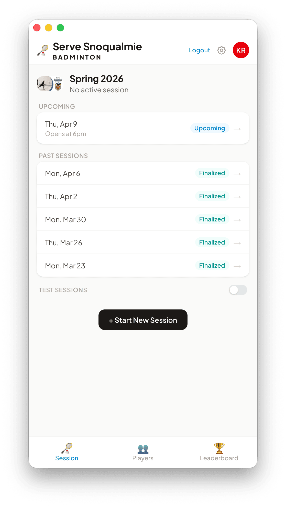
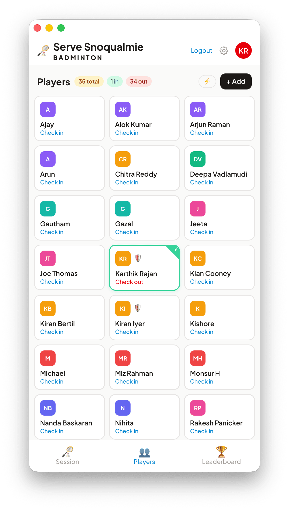
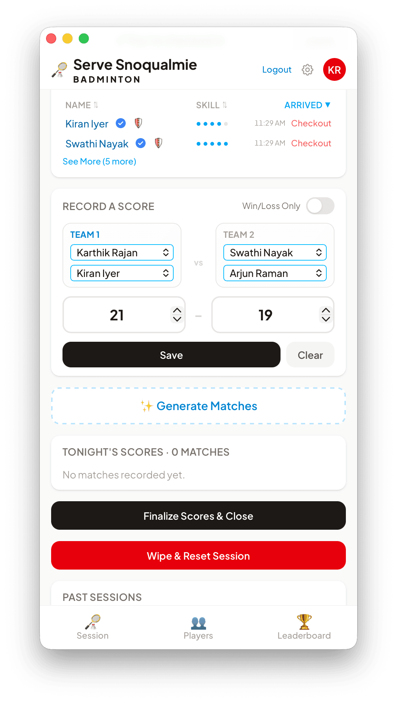
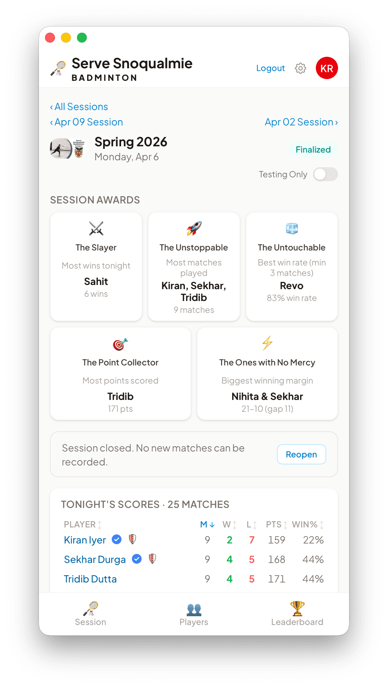
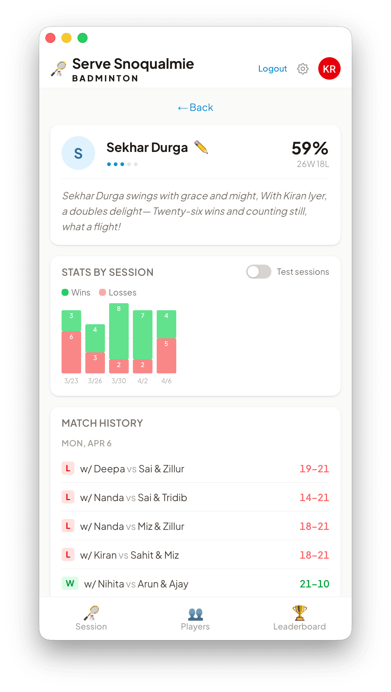

A drop-in badminton club in Snoqualmie, WA ran Mondays and Thursdays on a whiteboard and illegible handwriting. This replaced it: check in, record the game, watch the scoreboard move.
A badminton night, on the phone that was already in your pocket
Every Monday and Thursday, a drop-in club in Snoqualmie turns up with rackets and a whiteboard. Names get scrawled at the top, wins get tallied in the margin, and by the last game of the night nobody can read the handwriting or agree on who beat whom.
Sno Baddy puts the same night on a phone. An admin starts the session, players tap Check In, and the app knows who is on court. Tap Generate Matches and it proposes the next round from wait time, skill and who has already played whom — the part a whiteboard cannot do.
Tour
One night, screen by screen

Session list
Every night gets a page
The home screen is the season. Tonight sits at the top; every past Monday and Thursday sits under it, finalized and still readable months later. An admin starts a new one in a tap.
Upcoming, in progress, finalized
Test sessions hidden behind a toggle

Check-in
Who is actually here
Players tap Check In on their own phone; an admin can check anyone in or out from the card grid. Walk-ins get added by hand, with no account, and count like everyone else.
Skill level 1–5, editable by an admin
Soft delete keeps a leaver’s history

Scores
Two taps, one score
Pick two teams and a number, or flip Win/Loss Only for a night nobody wants to type. Generate Matches proposes the next batch: longest waiters first, no back-to-back games, teams split for even skill.
Simple or full scoring, set per session
Queue tops itself up after each score

End of night
Awards, then the ledger
Finalizing closes the session and hands out awards: The Slayer, The Unstoppable, The Untouchable, The Point Collector. Under them sits the night’s full table — matches, wins, losses, points, win rate.
Closed sessions can be reopened
Numbers roll into the season automatically

Profiles
Your season, with a poem
Tap any name for wins and losses per session as a bar chart, plus every match you played — partner, opponents, score. Each profile also carries a short poem about the player, written by Claude.
Poem is cached, rewritten as the record changes
How it works
From an empty court to a season table
Four things happen every club night, in this order, and the app only ever asks for the next one.
01
Start the session
An admin opens tonight’s date and taps Start. The session goes live for everyone who has the app open.
02
Check in
Players tap Check In from their own phone; walk-ins get added by hand. Who’s Here fills up with skill dots and arrival times.
03
Play, then record
Generate Matches proposes the next fair batch. After a game, someone saves the score and the scoreboard updates for everyone.
04
Finalize the night
The admin closes the session. Awards get handed out and the night’s numbers roll into the season leaderboard.
Features
What’s actually in it
Live check-in
Tap in when you arrive, tap out when you leave. Who’s Here updates for everyone with the app open.
Match generator
Proposes balanced doubles from wait time, skill level, and who has already played whom tonight.
Two scoring modes
Full mode records the actual points. Win/Loss mode records only who won, for nights nobody wants to type.
Session scoreboard
Wins, losses, points and win rate for tonight, sortable by any column, with the full match log underneath.
Season leaderboard
Cumulative record for the whole season, plus two season awards for volume played and best win rate.
Session awards
Closing a night hands out The Slayer, The Unstoppable, The Point Collector and a few more.
Player profiles
Win rate per session as a bar chart, plus every match with partner, opponent and score.
A poem per player
Claude writes a short poem for each profile and rewrites it when that player’s match count changes.
Admin controls
Start, close or reopen a session, edit or delete a match, and set anyone’s skill level from one to five.
Built with
The stack, and where the data lives
Next.js 16
React 19
TypeScript
Tailwind CSS v4
Supabase
Anthropic SDK
Vercel
Names, skill levels and scores live in a Supabase Postgres database behind row-level security. Sign-in is Google OAuth or email and password. The poems cost a few cents of Anthropic credit. It is, objectively, more engineering than a whiteboard requires. The whiteboard cost $4.99.
FAQ
Reasonable questions
Is it free?
Yes. No ads, no subscription, nothing to buy. The Anthropic API credit the player poems burn through is measured in cents, and it is mine.
Do I need an account?
To check in or record a score, yes — Google sign-in or an email and password, then about ten seconds to pick a skill level. Walk-ins need nothing: an admin adds them by hand.
Where does my data go?
A Supabase Postgres database with row-level security, served from Vercel. It holds display names, skill levels and match scores. Vercel Analytics and Speed Insights collect page-level traffic data.
Does it work on my phone?
That is the only place it really gets used — the whole thing is built mobile-first for people standing next to a court. It is a website, not an App Store download.
Can my club use it?
Not as it stands. Admin emails are a hard-coded whitelist and it assumes one club and one season. The source is on GitHub if you want to fork it and change that.